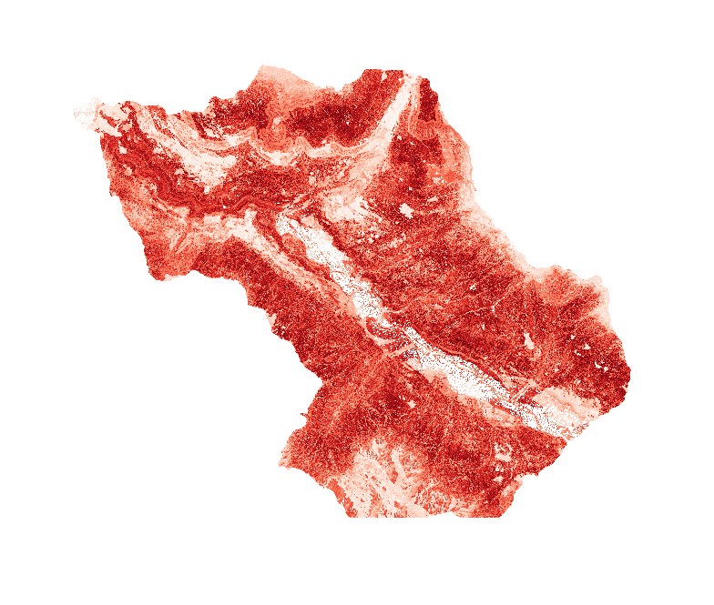

Our Results
Analysis of the eastern region of Lake Como through Landslide Susceptibility Mapping

The error matrix that we have obtained from the validation procedure is the following:

The overall accuracy OA, represents the proportion of correctly classified pixels out of the total number of pixels assumes the value of 0.77. This accuracy corresponds a sufficiently high level of reliability in the results of the susceptibility map.
From the phase of Population Exposure Assessment it is revealed that the majority of the population lives in the low risk of landslide zone, but despite of this a consistent part of the population of the area lives in the high and very high risk of landslide zone.